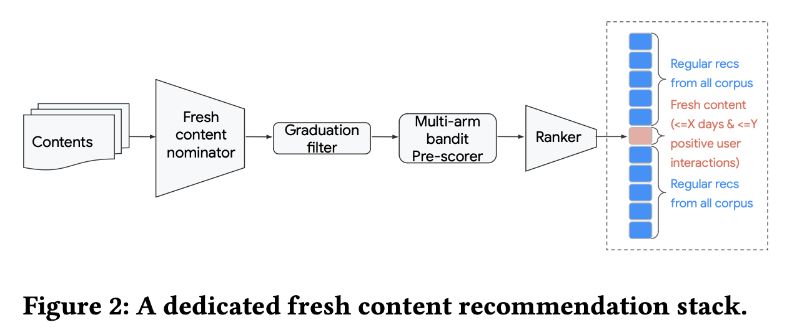
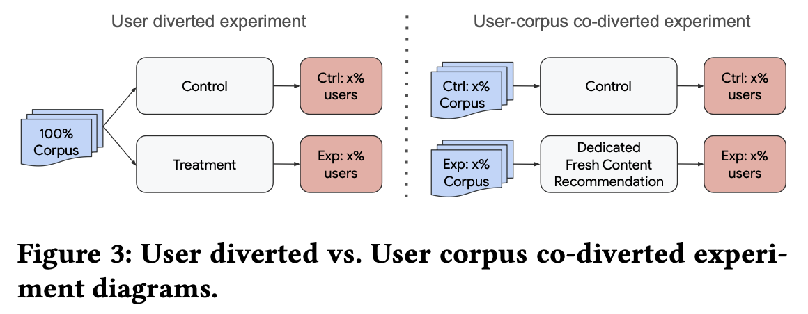
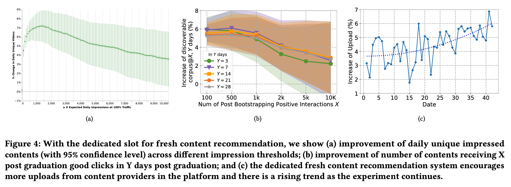
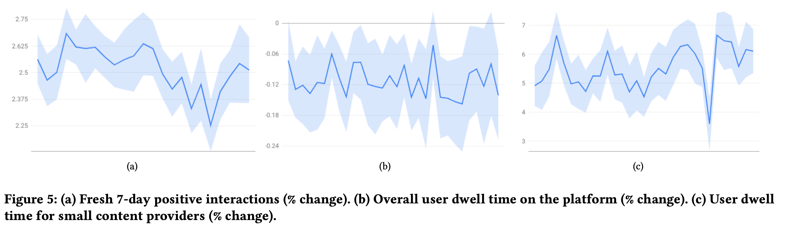
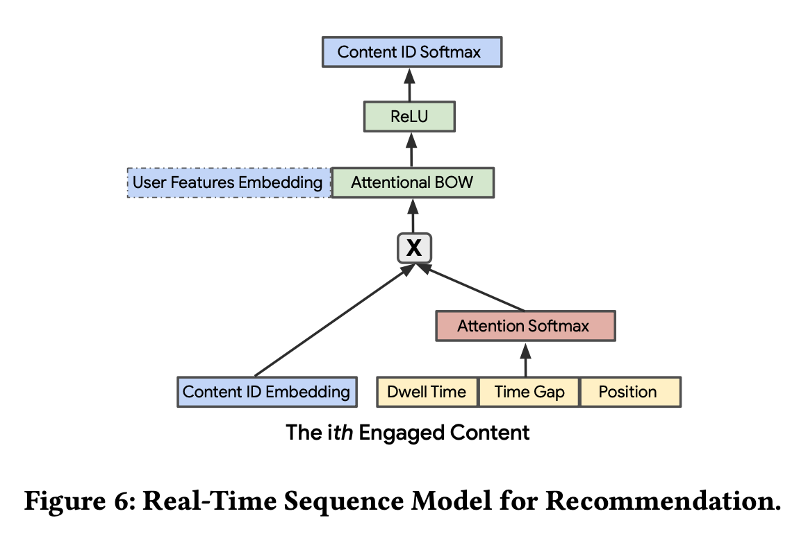
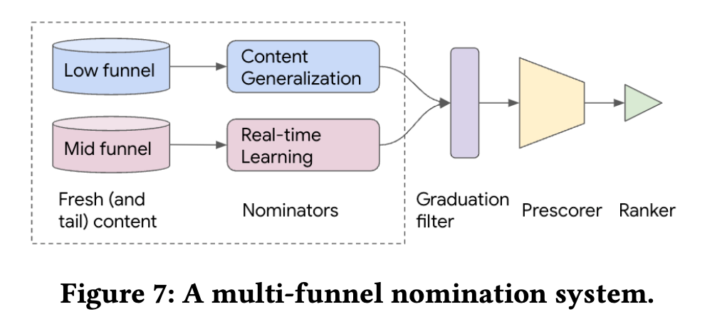
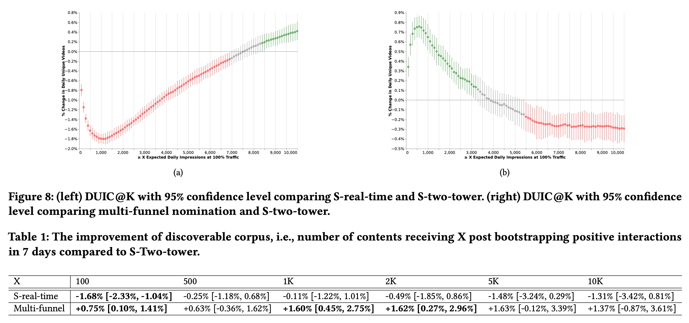
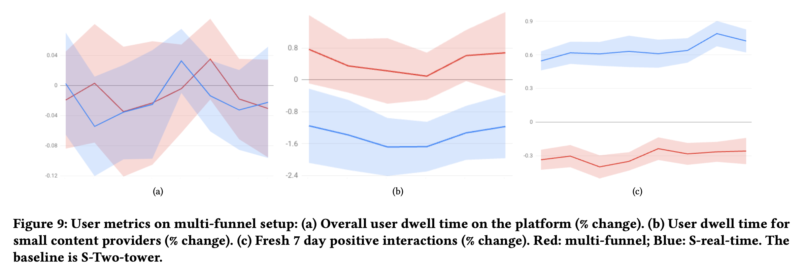

摘要
Recommendation system serves as a conduit connecting users to an incredibly large, diverse and ever growing collection of contents. In practice, missing information on fresh (and tail) contents needs to be filled in order for them to be exposed and discovered by their audi- ence. We here share our success stories in building a dedicated fresh content recommendation stack on a large commercial platform. To nominate fresh contents, we built a multi-funnel nomination sys- tem that combines (i) a two-tower model with strong generalization power for coverage, and (ii) a sequence model with near real-time update on user feedback for relevance. The multi-funnel setup ef- fectively balances between coverage and relevance. An in-depth study uncovers the relationship between user activity level and their proximity toward fresh contents, which further motivates a contextual multi-funnel setup. Nominated fresh candidates are then scored and ranked by systems considering prediction uncertainty to further bootstrap content with less exposure. We evaluate the benefits of the dedicated fresh content recommendation stack, and the multi-funnel nomination system in particular, through user corpus co-diverted live experiments. We conduct multiple rounds of live experiments on a commercial platform serving billion of users demonstrating efficacy of our proposed methods.
推荐系统是一个能够将用户和不断增长的多样内容相互联系的渠道，在实践中，新内容（以及长尾的内容）需要填补信息才能找到对应的受众。
本文主要分享了我们在youtube（一个大型商业平台）上针对新内容所搭建推荐链路的成功经历。为了孵化新内容，我们构建了一个多通道的“提名”系统（召回），包括：
- 为了提升覆盖度，具备极强泛化能力的双塔模型
- 为了提升相关性（可以理解为用户对内容喜爱程度），根据用户行为，近实时更新的序列模型
多通道的设计也能够有效平衡覆盖度和相关性，除此之外，通过一项研究，我们也发现用户的活跃度和他们对于新内容的接近程度有关，这也促使我们采用多通道的方式。
被提名的新内容之后会由考虑到预测不确定性的系统进行打分和排名，进一步提升少曝光的内容。
我们通过用户和内容共同分流的实验，评估新内容孵化链路以及多通道提名系统所带来的收益，并在一个为十亿用户服务的商业平台上进行了多轮实验，证明了我们的方法的有效性。
新内容孵化链路

整体链路如上图所示，主要包含以下几部分：
1. 新内容提名：对于新内容提名模块，其主要挑战就是缺少用户交互信息，为了解决这个冷启动问题，采用了基于内容的双塔模型，通过item特征可以具备较好的泛化能力，线上inference时采用最大内积搜索，检索出top 50的内容。
2. 毕业过滤：一旦新内容完成初始的用户交互积累，它们就可以被推荐的主通道所召回，我们采用的至少过滤条件为至少被用户消费n次，其中n是根据能够被推荐主赛道进行有效分发的正交互数量确定的。
3. 排序：排序分成两部分，实时的粗排（pre-scorer，预排序）和主赛道的精排，其中粗排相对轻量级，可以实时反应用户的早期行为，粗排选出top 10进入精排，然后精排选出top 1。
粗排中包含一个实时的Bernoulli multi-arm bandit，对每条内容进行E&E，估计Good CTR（点击后停留10s以上），$r_i \sim \text{Beta}(\alpha_0 + x_i,\beta_0+n_i-x_i)$，其中$\alpha_0,\beta_0$为全局的先验统计（只统计100PV以上的内容），线上使用时，采用Thompson采样，选择top 10内容。
4. 定坑：定坑的做法可能会有损效率，但是会有这样几个优势，首先更可控，有稳定的流量分配给该新内容，受到流行度bias（即马太效应，向头部集中）影响更小，同时易度量，可以更方便地比较不同策略的好坏，以及可扩展性强，可以通过扩坑的方式提升孵化内容数量。
可以出现在定坑的新内容定义为X天内发布且正向用户交互数低于Y的内容。

用户-内容共同分流实验，相比于传统AB实验，内容会展示给不同组的用户，无法观测策略对于内容的影响，所以我们采用用户-内容共同分流的实验方式，用户和内容分流相同的比例所得到的实验结果与全量后大盘效果是一致的。
评估指标：
- Daily Unique Impressed Contents at 𝐾 (DUIC@K) ，内容流量指标，不同曝光数量下的内容数，用于衡量覆盖度的变化
- Fresh Content Dwell Time (DwellTime) ，用户指标，新内容的观看时长，用于度量相关性
- Number of content receiving X (post bootstrapping) posi- tive interactions in Y days (Discoverable Corpus@X,Ydays)，用于度量实验后的长期收益，Y天内获得X次正向效果的内容数量
作者们做了为期一个月的用户-内容分流实验，用于评估新内容孵化链路的价值：
- 覆盖度提升了，fig4(a)为不同曝光数（K）下，内容的数量有4% ∼ 7.2%的增长
- 更多内容被用户消费了，fig4(b)中，横轴是助推后内容受到正向交互的数量，纵轴是不同统计周期内的内容数量，相比对照组，孵化助推会让新内容在之后获得更多用户的交互，这也表明新内容孵化链路不仅提高了内容的覆盖度，也对有价值的内容有长期的助力作用
- 创作者受到激励创作了更多内容，fig4(c)中，创作者上传内容数量随着时间也递增
- 更多新内容被用户消费的同时，短期用户参与度的影响很低，fig5(a)用户对于新内容的交互数量增加了+2.52%，停留时长降低了-0.12%，中小创作者的停留时长增加+5.5%


多通道新内容推荐
在有基础链路之后，我们希望能够在有限数据的帮助下尽量提高所孵化内容的相关性，所以提出一个多通道的召回方案。
内容泛化
大部分基于协同过滤的推荐模型是根据用户的行为或评分，来构建用户和内容的id embedding，但是长尾内容、新发布内容天然会缺少用户的交互，这也使得模型无法学好id embedding。针对这个问题，一个可行的解法是根据创作者进行推荐，将新内容分发给熟悉的或者已经订阅的用户。
为了解决上述问题，我们根据内容特征来描述新发布内容，这类特征可以使得模型能够借热门流行内容学习到针对新内容的用户偏好。在原始双塔模型结构的基础上，我们去掉了id类特征、内容历史行为统计类特征。
实时学习
在有较强内容泛化能力基础上，我们希望能够有效利用用户的稀疏行为来提升系统的相关性，针对这个问题我们做了一个近实时更新的提名系统，采用实时用户行为数据进行训练，同时构建了一个低延迟的个性化召回模型。
模型的结构如下图所示，item塔仅采用id embeeding，user塔由用户基本特征embedding和用户所消费的行为序列构成，行为序列用attention的方式进行处理，attention的权重和对应内容的停留时长、观看到当前的时间间隔以及曝光位置相关。作者曾尝试使用RNN类结构，但是没有明显效果提升。模型每15min会用最新的数据训练一小时，然后模型上线，线上仍采用最大内积检索，并返回top 50的结果。

在新内容上线的时候，内容的表现会有较大差异，有的内容会快速积累数千的交互数据，有的却很稀疏。由于模型仅依赖于id embedding，这就导致可能会存在模型被少数爆火的内容所domain的风险。为了避免这个问题，我们也增加了一些内容属性特征，并且用IDF的方式进行加权，来避免流行热门内容属性的影响。
多通道召回
对于非常少行为的内容（low-funnel content），实时学习的召回模型效果并不好，对于有少量行为的内容（middle-funnel content）则可以达到更好的个性化和相关性，相比于在一路召回中同时提升泛化性和相关性，我们采用一个多通道召回的方案，如下图所示,同时为了降低系统负载，以概率p%来选择其中某一个通道进行召回。

实验结果如下：
- 相比于单纯双塔模型，实时学习的双塔受流行热门影响较大，曝光向头部集中（fig8 left），多通道召回则会更均衡（fig8 right）
- 长期来看，多通道的内容助推效果会更好（table 1）
- 用户总停留时长变化不大（fig9 a），在新内容上的停留时长增加（fig9 b），

